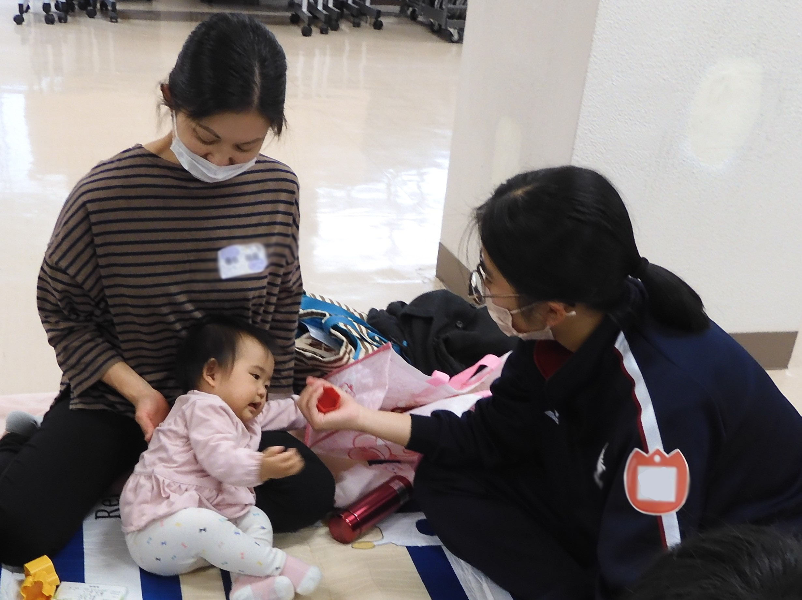

中学生と赤ちゃん＆パパ・ママのふれあい
コロナ禍でのふれあい体験。「赤ちゃん親子さんの協力がいただけるのかしら？」「学校での実施はできるのかしら？」などなどの心配をしつつ、秋の実施に向け、春先から準備を進めて参りました。幸いなことに、11月の附属中でのふれあい体験に合わせるかのようにコロナの感染は終息の方向に向かってくれました。
また、赤ちゃん親子さんやひろさきアフタースクールをはじめとした市民ボランティアの皆さんのご協力をいただくこともできました。さらに、コロナ前には考えられなかったハイブリッド型のふれあい体験もありました。（鶴田町と東京から1組ずつ、赤ちゃんとパパ・ママがオンライン参加をしてくださったのです。）
無事5日間のふれあい体験を実施することができました。みなさまのご理解とご協力に心より感謝申し上げます。 （赤ちゃんとのふれあい体験事務局）
イベントの様子
今回開催した「赤ちゃんとのふれあい体験」の様子をまとめた動画です。
イベント参加生徒から
体験中、優しいまなざしで赤ちゃんを見つめ、だっこの腕にそのぬくもりと命の重さを感じた生徒たち。パパやママのお話からその愛情を感じ、そして先輩たちの姿から自分の将来への視野を少し広げることができたようです。彼らの感想の一部をご紹介します。（原文ママです。）
・あっという間の楽しいふれあい体験
一番感じたことは、赤ちゃんってすごい。ということでした。まず、自分は○○ちゃんから目が離せませんでした。自分の方を見てくれて、目があったらもうずっと目が離せませんでした。この授業が1時間もあったのに、体感は５分もありませんでした。○○ちゃんのことについて聞いている時間やふれあっている時間は、本当に楽しくて、一瞬で過ぎ去りました。
・自分も育てられてきた・・・
赤ちゃんは人々に笑顔をもたらしてくれる。純粋な笑顔には何にも勝てない気がした。そんな自分も赤ちゃんだった。改めていろいろな人に支えてもらっていることを感じた。私自身、家族に「ありがとう」とはあまり伝えられていないけど、自分を生んで育ててくれたことを当たり前とは思わず、感謝し、時には言葉で伝えられたらいいなと思いました。
・自分も成長していこう
自分は○○ちゃんが靴を履いた時、すごく感動しました。今まではかなかった靴を、リモートをしているときに履いた、これは成長です。自分は成長した時の喜びを忘れていました。しかし、成長するんだと○○ちゃんに見せられ、自分も成長していくために少しずつ努力していこうと思いました。（Zoomでのご参加でした。中学生の前で初めて靴が履けたのだそうです。）
・仕事も子育ても支え合う
とにかくかわいかったです。お話を聞く前は、子育ては大変なことだと思っていたけど、そんなことなくて、むしろ幸せになれることなんだと感じました。○○ちゃんを見ていれば、本当に嫌なことが吹っ飛ぶくらいに元気をもらえました。子育ては支えあうことが大切だなということも学びました。仕事との両立は大変だと思うし育てるのも簡単じゃないけど、支え合って頑張っていくことの素晴らしさも感じました。（パパ・ママとのふれあい体験でした。）
・赤ちゃんが好きになりました
僕は赤ちゃんが少し苦手だったのですが、今回●●ちゃんとふれあってみて、赤ちゃんが好きになりました！（確心）
・今回の体験を通して、もっと赤ちゃんと関わりたいと思いました。少し将来のことを考えさせてもらいました。夢は変わるかもしれませんが、小児科医になってみたいと思いました。今回の体験で赤ちゃんは「泣いてばかり、かわいいけど・・・」から「本当にかわいい」に変わりました。
・育児というのは大変だというイメージばかり言われているけど、それよりも赤ちゃんの一つ一つの所作とか表情に喜びを感じました。私が大人になって、○○さんのような出会いがあるか分からないけど、育児をして赤ちゃんの成長を間近で見てみたいなと思いました。

・僕は将来、仕事が優先になるのではないかと思う。けれど、男性の育休取得は7％だということなどと、子育ては手伝うのではなく、最初から自分もやるという考え方を教えてもらって、将来意識していきたいと思ったし、僕が大人になるまでの間にも、ニュースなどで男性の育児について興味を持つようにしたいと思いました。
・赤ちゃんを持つパパ・ママの話が聴けて良かった。赤ちゃんが少なくなっているこの社会、こういう体験を増やしてその体験をした人たちが将来「子どもが欲しい」という思いにつながると思うし、少子高齢化対策につながると思う。今日はこういった経験ができてよかった。これから「受験」という人生の分岐点に立つ私たちも、今日の話を頭において、高校、大学、社会人と生きていきたい。